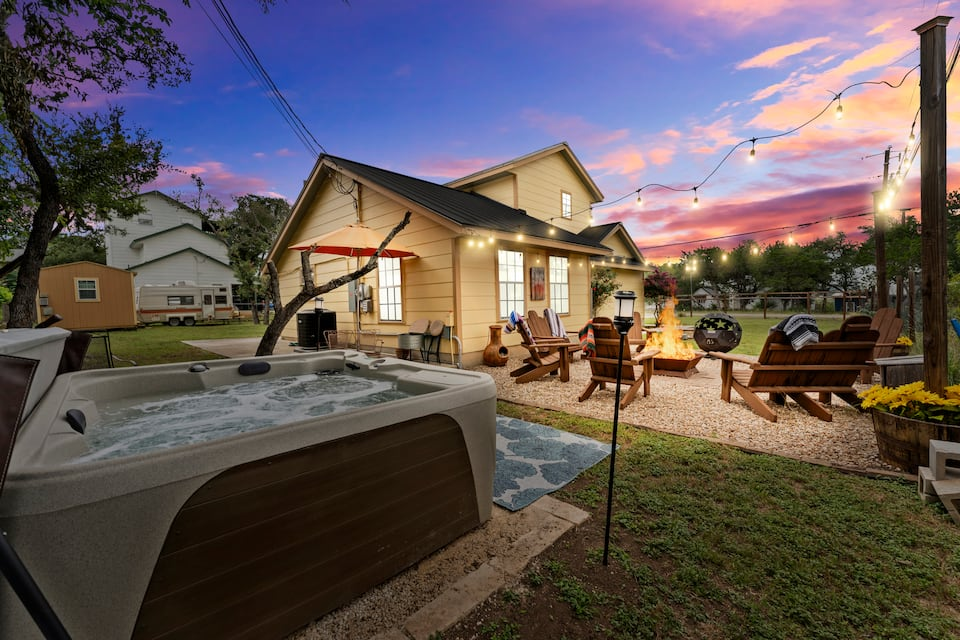
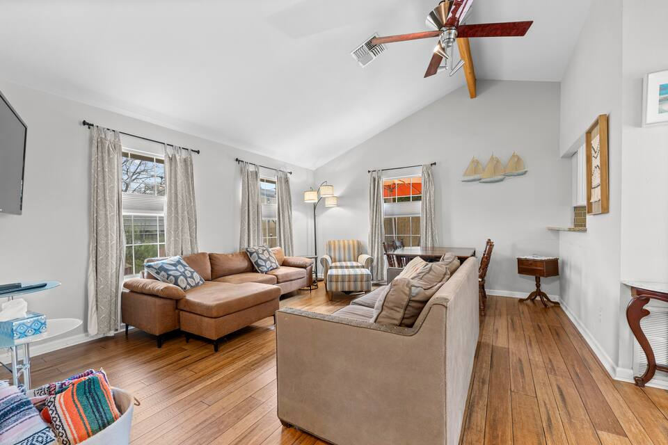
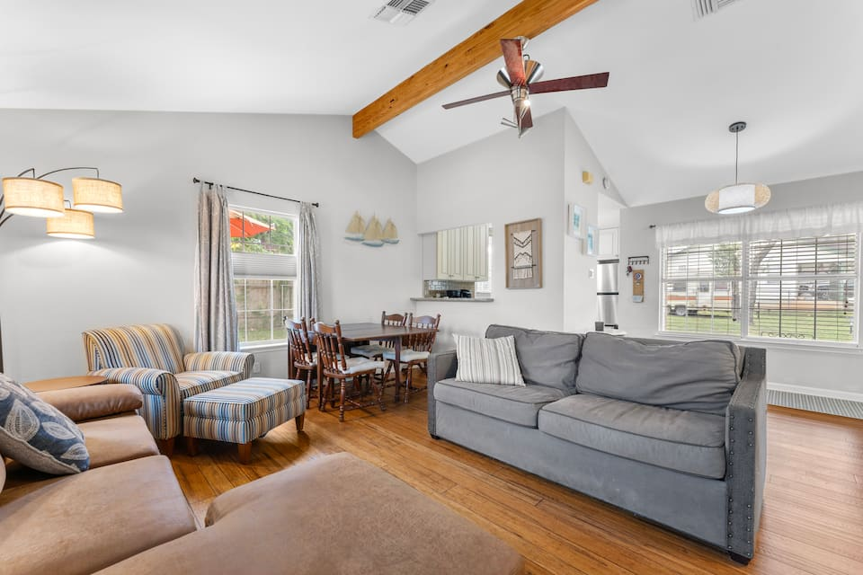
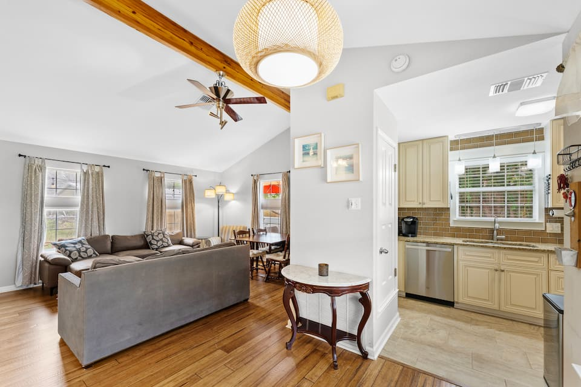
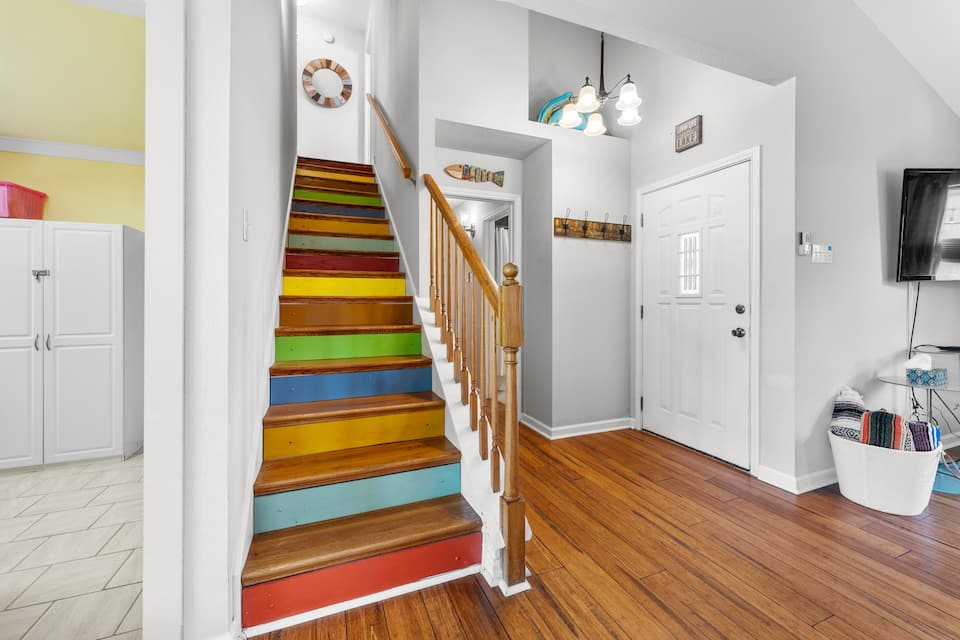
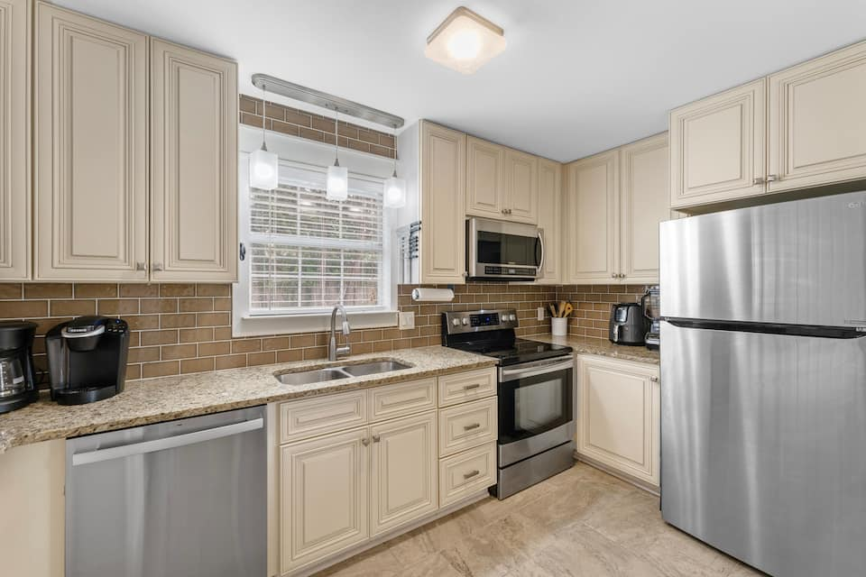
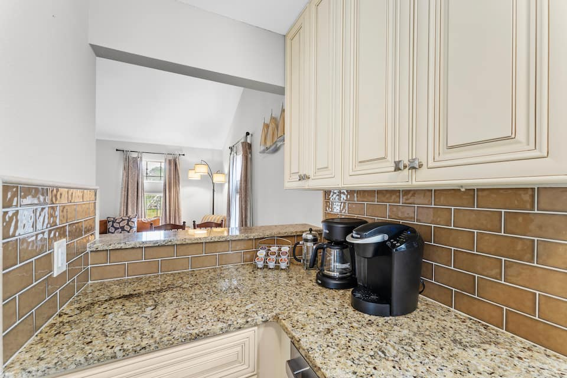
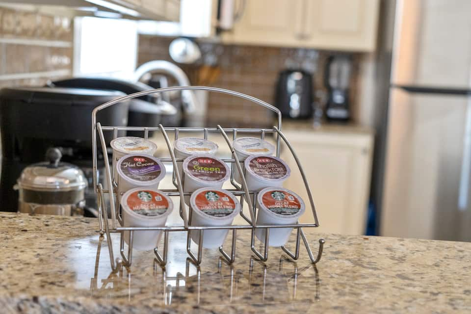
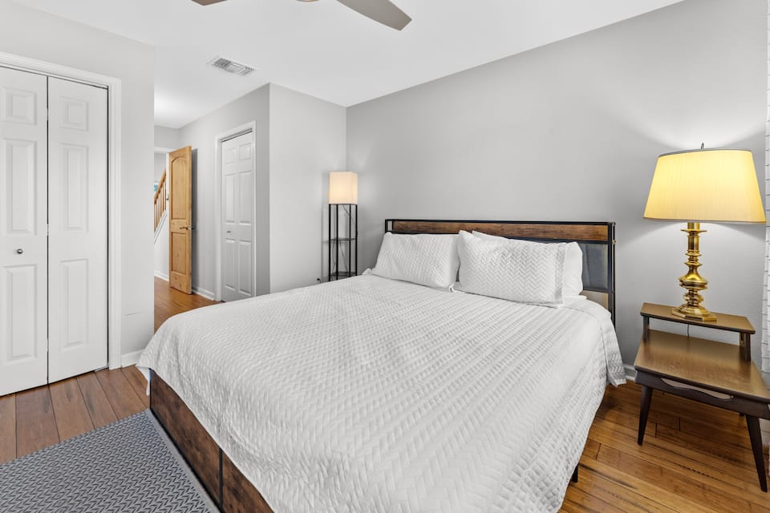
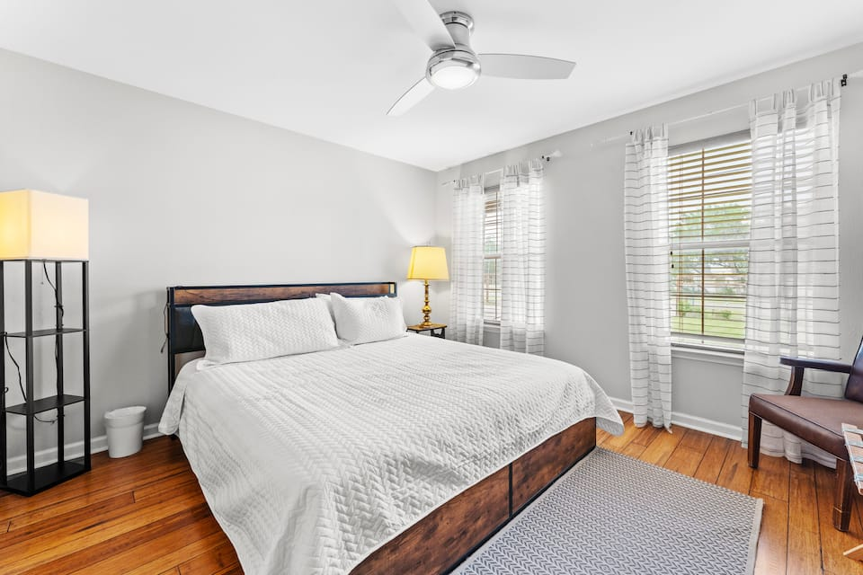

1 · Top pick
Walk to the Lake — Hot Tub & Fire Pit
Canyon Lake · about 1 hr from Austin
$3891 night, fees included
4.92 ★ · 52 reviews · Superhost · Free cancellation until Feb 12
The lake is right across the street, with a public boat ramp, and there is a private hot tub and fire pit for the evening. It has the most flexible cancellation of the three.
Sleeps 7 · 3 bedrooms plus a futon room · 2 baths. King bed downstairs, two bedrooms upstairs.
Amenities
Private hot tubFire pitGas grillLake viewLake accessSun loungersOutdoor diningFull kitchenKeurig and coffeeDishwasherWasher and dryerWi-FiDedicated workspaceSmart TVSelf check-in (smart lock)Free parking
Things to do at the house
- Soak in the hot tub after dark
- Sunset walk down to the lake and the boat ramp
- Fire pit and s'mores, dinner off the gas grill
- Morning coffee with lake views on the patio
Nearby attractions
- Gruene Historic District~25 minAntique shops, wine tasting and live music at Gruene Hall, the oldest dance hall in Texas
- Canyon Lake Gorge~10 minGuided hikes through a canyon carved by the 2002 flood, with fossils and dinosaur tracks. Reservation only.
- Natural Bridge Caverns~30 minLarge show caves with guided tours
- Wimberley Square~35 minBoutiques, galleries and cafés
- Guadalupe River State Park~35 minRiverside trails and limestone bluffs
- New Braunfels~25 minRestaurants, day spas and massage studios for a Valentine's treat
No carbon monoxide alarm listed. Check in after 4 PM.
See it on Airbnb →